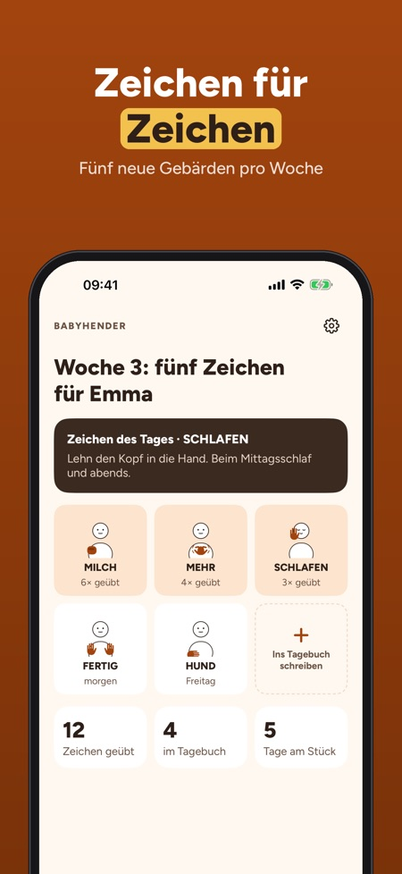
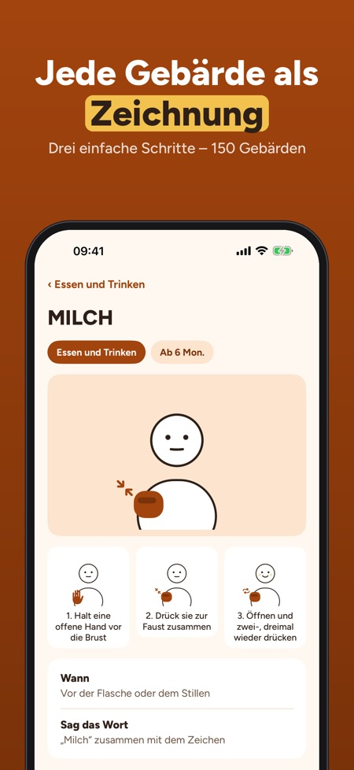
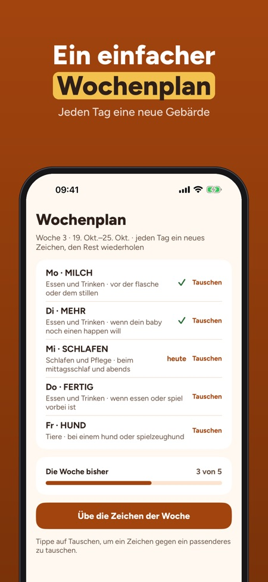

Gebärden für dein Baby. Gebärden mit deinem Baby: 150 Zeichen mit Zeichnung und Schritten, ein Wochenplan mit fünf Gebärden und ein Tagebuch für die ersten Zeichen – offline.



Babyhender hilft dir, einfache Gebärden mit deinem Baby zu nutzen, bevor die ersten Wörter kommen – eine kleine Gebärde nach der anderen, im Alltag.
30 Gebärden in 3 Themen, der erste Wochenplan, das Tagebuch und die Tipps sind ohne Kauf nutzbar. Die Vollversion ist ein Einmalkauf für alle 150 Gebärden, neue Wochenpläne, Lieder, Spiele und Fortschritt. Kein Abo.
Die Gebärden sind einfache Alltagsgesten für Babys, von uns gezeichnet. Viele ähneln Gebärden der Deutschen Gebärdensprache; die App verlinkt ein Gebärdenlexikon für die offizielle Gebärde. Babyhender ist unabhängig und gibt keine medizinischen Ratschläge.